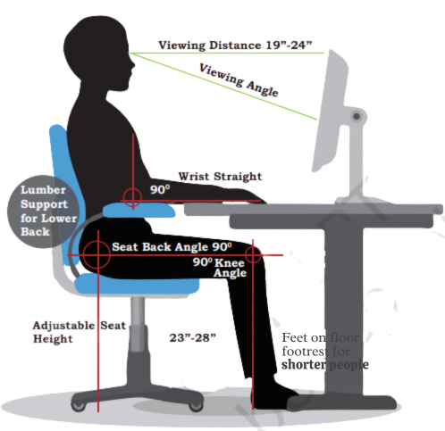

Excessive screen time and poor posture while using digital devices can have adverse effects on physical and mental health. Ergonomic practices can help reduce strain and prevent issues like eye strain and fatigue.
To alleviate symptoms like dry or itchy eyes, it is recommended to take regular breaks, focus on distant objects, and engage in outdoor activities.